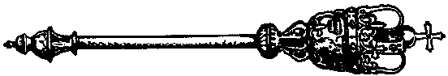

La Politique en Jèrri
Ès Êtats d'Jèrri y'a quarante-neu membres êlus:
Y'a étout ès Êtats:
Lé Bailli, tch'est l'Président d's Êtats et tch'est appouainté par la Couoronne
Lé Douoyen, tch'est l'Recteu d'Saint Hélyi et chef d'l'Êglyise Anglyicanne en Jèrri. I' peut pâler ès dêbats ès Êtats, mais i' n'a pon l'drouait d'voter.
Lé Lieut'nant-Gouvèrneux, tch'est l'èrprésentant d'la Reine en Jèrri. I' n'a pon l'drouait d'voter ès Êtats.
L's Officièrs d'la Couronne: lé Protchutheux-Génétha d'Sa Majesté et l'Avocat-Génétha d'Sa Majesté, tchi peuvent pâler entouor des tchestchions légales mais n'peuvent pon voter.
Lé Gouvèrnément d'Jèrri est m'né par un Chef Minnistre ou eune Tchève Minnistre êlu(e) par les Êtats. La Tchève Minnistre ou Chef Minnistre propose ses candidats pouor minnistres ès Êtats, mais d'aut' membres peuvent êt' proposés étout. Les minnistres sont votés par les Êtats étout.

La Mâsse, tch'est l'sŷmbole d'la Constitution, fut donnée à l'Île par l'rouai Charles II d'Angliétèrre pouor èrmèrcier l'Île (et sustout lé Bailli) pouor lé souôtchein tch'il avait r'chu pendant la Dgèrre Civile. Ch'tait dans l'Vièr Marchi qu'Charles fut procliâmé rouai pouor la preunmié fais après la mort d'san péthe, lé rouai Charles I.
Vocabulaithe:
|
Jèrriais |
Angliais |
Français |
| |
|
|
|
la Pâraisse |
Parish |
la Paroisse |
|
lé Bailli |
Bailiff |
le Bailli |
|
lé Sénateu
la Sénateûthe |
Senator |
le Sénateur |
|
lé Député
la Députée |
Deputy |
le Député |
|
lé Connêtabl'ye
la Connêtabl'ye |
Constable |
le Connétable |
|
l's Êtats d'Jèrri |
States of Jersey |
Les États de Jersey |
|
lé Gouvèrnément d'Jèrri |
Government of Jersey |
Le Gouvernement de Jersey |
|
lé Lieut'nant-Gouvèrneux |
Lieutenant-Governor |
Le Lieutenant-Gouverneur |
|
lé Douoyen |
Dean |
le Doyen |
|
la Mâsse |
Mace |
la Masse |
|
êlithe |
to elect |
élire |
|
un êlecteu |
elector |
un électeur |
|
eune êlection |
election |
une élection |
|
eune vouaix |
vote |
une voix |
|
la louai |
law |
la loi |

D'aut's parléments:
- Êtats d'Dgèrnésy
- Êtats d'Aur'gny
- Chefs Pliaids
- Tinvaal/Tynwald (Chambre des Cliés & Conseil Législati)
- Parlément Êcôssais
- Parlément Gallouais
- Assembliée d'l'Irlande du Nord
- Parlément du Rouoyaume Unni (Chambre des C'meunes & Chambre des Lords)
- Parlément Irlandais (Dáil & Sénat)
- Congrès
- Assembliée Nâtionnale
D'aut's parlémentaithes:
- Consilyi/Consiliéthe - Consilièrs
- Député du Rouoyaume Unni (MP)
- Député Irlandais (TD)
- Député Êcôssais (MSP)
- Député Gallouais (MS)
- Député Nord-Irlandais (MLA)
- Député Manx/Mannais (MHK)
Viyiz étout:
- Lé vocabulaithe d'la politique en Jèrriais
- La Meunicipalité en Jèrri
- Les Êtats d' Jèrri
- Lé Rouai Charles III, Duc dé Nouormandie
- La Reine Lîzabé II, Duc dé Nouormandie
- La Mâsse Rouoyale
- Nos Êtats au jour d'agniet
- Es êcoutes dans l's'Etats
- Lé Preunmié Minnistre
- Les Minnistres
- Les Chefs et les Grôsses Têtes
- Fédétha dans lé Ch'na?
- Chenna dépend
- Un co d'êtat
- Les constitutions
- Lé S'na du Sénat
- Ph'lip et les Baillis
- Le Bailli Mène un' Vie De Tchean!
- L'èrtou du Bailli et la dgèrre
- La Cérémonie à Londres
- Lé Bailli et les nus
- Tchi qu'tu crai dé l'affaithe dé Vernon Tomes?
- Lé Gouvérneux
- Les Counnêtablyes
- Notre Election pour Connaîtable
- L'Histoithe de l'Élection Pour La Pièche De Connêtable Qui Eu Lieu En La Paraisse De La Trintai Le 29 Juillet 1877
- Merrienne Angry With The Deputy
- Nos Députés
- À Deux Députés
- Les Députés et les mandats
- L'Élection pour Député
- Les Estats
- Lé Caouain à la Chambre des Débats
- Un Jour ès Êtats
- Merrienne on the States
- Payment to States Members - Ph'lip and Merrienne talk it over
- Membres des Estats
- Ode au peuple et aux États
- The Commissioner's Report
- The Communist menace
- Les Verts
- Un Parti Jèrriais?
- Les Rouoges et les Blus
- Rouôge ou B'yiu?
- Rose ou Louothi?
- Jêrri pour les Jêrriais
- Election Expenses
- Des Sénateurs Batilleux
- La Pouaison et les Sénateurs
- Les Sénateurs et les Bêtes
- Les D'vis du Bouan'homme George
- The Election For Senators
- Senator Or Deputy?
- A Women's Political Party
- D'accord dé parti
- Eune lettre dé 1890
- Vote Secret, ou Votaies Par Balo
- Ou zêtes pour le "balô"
- Mathièthe d'êlection
- Lé Scrutin
- Vote Secret
- A Moussieu le Rédacteu de la Nouvelle Chronique
- Visite à la Cour Rouoyale
- La Vieille Coquette et sen Bibi
- Une Députation
- Les Députations
- Les amiétés d'un foyi paternel
- Les Êlections
- Les Élections
- Eune bouanne êlection!
- Aux Electeurs de l'ile de Jerri
- J.J. Le Marquand
- Des reflexions sus l'zeslections et lus produits
- Maîte Jean Dangnié sue l'Zélections
- Peter on forthcoming elections
- Electioneering campaign
- Piteur discourses on elections
- L'Election d'Mardi dern'yi!
- Electioneering secrets
- Electioneering topics
- How Both Sides Shall Win
- Les Êlections
- Élie à l'êlection
- D'un jeune gâs
- Êtes-ous dé m'n avis?
- Madame L'Election
- Allais cherchi des voies!
- Election de la Trin'tait
- Election de la Trin'tait 2
- St.-Laurens. - L'Élection
- St.-Laurens. - L'Élection - Réponse du Couosin John au Couosin Kliément
- L'Élection de St. Clément
- Vive George Crill
- L'Election à St. Jean
- Élection de St. Martin
- Vive èt Bravo Jean Cabot!
- Maît' Jean Cabot, l'Anmin du Peuple
- Votais pour Billé Bisson
- Eune caricatuthe politique
- L'Entèrrement d'la Rose
- Quand les femmes voteront....
- Elie va baithe du thée siez une Suffragette
- La Vouaix d'une Femme
- Les Suffragettes
- Les Suffragettes
- V'là Marie Hibou en hertchin avec les autorités!
- Quatre candidats
- L'êlection à Ste. Mathie
- L'Election à St. Sauveux
- Pour la treîzime et dernièthe leçon à l'entou dé la bordèe d'êlection à St. Ou
- À la santé du candidat
- Le Jour de l'Élection
- Avant l'Élection
- Tchi sèrt lé publyi sèrt un ingrat
- La niet de d'vant l'Election
- Achteu que l'élection pouor Juge est passée
- L'Caouain comme candidat pour Juge
- Jean Cabot pour Juge
- V'la don un Juge d'êlu sans qu'i' y ait ieu une êlection
- Une visite entre deux vaizins oprès la dernièze élection de Juge
- Another 'Petite Histoire.'
- Les Petits Etats
- Représentation à la Cour Royale
- Une Saisè d'Hivé
- Dans les Pâraisses!
- Chanson
- A tous ceux qui... etc.
- Pllainttes d'un Candidat
- Quoi! Dujardin sezait mouchard?
- Un Député dans l'Embarras
- Guialogue en Patois Gerriais
- Les Chevaliers du Guet, ou les “Knights” en perspective!!!
- How Ph'lip Bought a Ring
- L's Elections et les 'Shows'
- Merrienne Goes Crazy
- Mait' Tom Bliampi ou Moussieu L'Sueur, B.A.
- Au mais d'décembre il est pour y'aver d's êlections
- Ch'tait Mardi passé qu'était l'grand jour, garçons
- Deux d'gouts d'jerriais
- Les d'vis du Bouan'homme George
- Les d'vis du Bouan'homme George
- Une êléction mémothablye
- En Jerri, il n'y a rein de dithèt qu'une élection pouor éclairer les gens!
- Flippe Grouaîsille
- La grande êlection
- Les Messieurs de la Cour ont décidé d'avèr l'election un Vendredi
- Ma p'tite bordée!
- Mort de mes os, le pouore caouan est triste
- Mister Pain on current events
- Nos r'velà grés de deux bouans Chantn'iers pour treis ans d'pus
- N'v'la donc les élections terminées
- Un projet de Louai permettant ès Inspecteurs des C'mins de siégi et d'voter
- V'là l'Election Générale qu'appréche
- Dans la pâraisse de man biau cliochi
- I' yavait quatre John qu'éthaient aimèt la 'job'
- Saint Louothains: Election pour Chantgniers
- Ph'lip et un traisième candidat
- Lé Conmité
- A Sign of the Times
- Le dèrnié jour
- Piteur's opinion on the Bill
- The Pains discuss the Bill
- La Politique et l'crime à Frémont
- La Politique, les louogements et l's êcoles
- Catalongne, Catalunya
- À tout seigneur tout honneur
- Dans la gâzette...